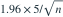

正态总体标准差已知为5。希望均值95%双侧置信区间的总长度不超过2，取 。最小样本量为？
- A
- B
- C
- D
我已思考，展开答案与解析
正确答案：D
- 半宽为

，要求不超过1。 - ，向上取整得97。
易错提醒题目给的是总长度2，半宽应使用1；样本量向上取整。
考后回忆 · 条件重建 · 回忆7、13
依据考试回忆重建；数字、选项和必要条件为补充设定，非原题。

，要求不超过1。考后回忆 · 条件重建 · 回忆7、13
依据考试回忆重建；数字、选项和必要条件为补充设定，非原题。